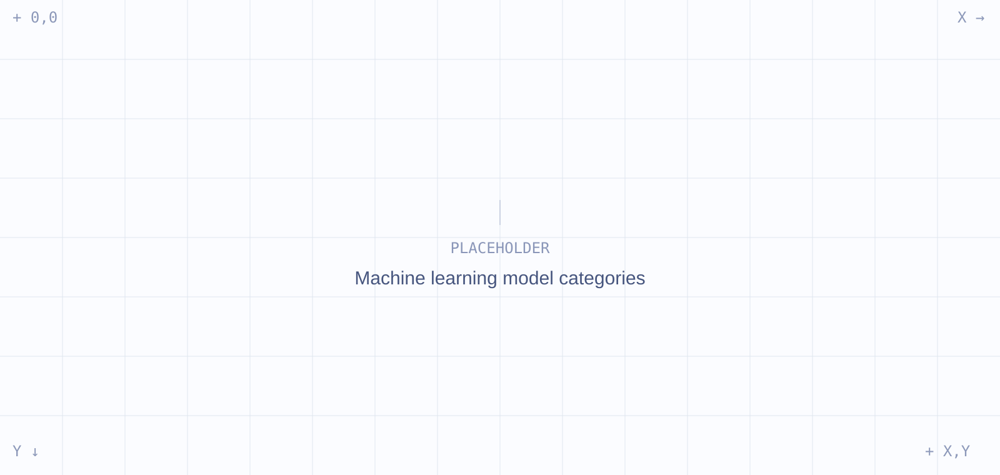
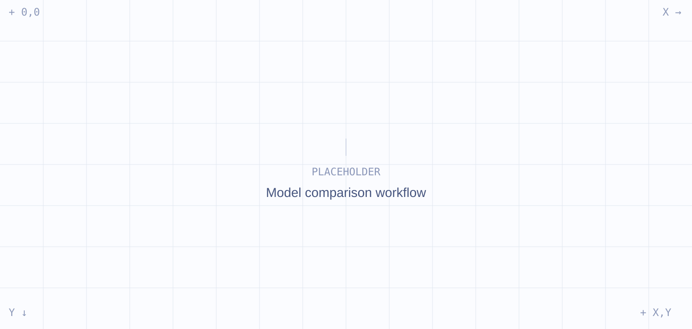

PRACTICAL STARTING POINT
Isolation Forest
- Role
- Preferred model for a first practical implementation.
- Strengths
- Efficient, suitable for unlabeled data and transferable to different furnace zones and process phases.
Research on suitable machine learning methods for detecting anomalies in multivariate industrial time-series data from an industrial pusher furnace.
Process overview: temperature, gas and air control systems across furnace zones.
Industrial pusher furnaces generate large amounts of process data from temperature, gas and air control systems. Detecting abnormal process behavior manually is difficult because of the amount and complexity of the available time-series data.
Only a limited number of clearly labelled anomalies are available. Therefore, the research focused on machine learning approaches that can learn normal process behaviour and detect previously unknown deviations.
A structured evaluation process was used to review 12 potential approaches, select 6 models for detailed comparison and prioritize 3 models for subsequent practical testing.

Categories of anomaly detection approaches considered during literature research.
The six selected models were assessed against industrial requirements. The matrix summarizes the qualitative fit of each model.
| Evaluation criterion | MA | PCA | OCSVM | IF | LOF | AE |
|---|---|---|---|---|---|---|
| Performance | + | + | 0 | + | 0 | 0 |
| Accuracy & false alarms | 0 | 0 | + | + | 0 | + |
| Rare & unknown anomalies | 0 | 0 | + | + | + | + |
| Unlabeled data | + | + | + | + | + | + |
| Robustness | 0 | 0 | 0 | + | 0 | 0 |
| Stability | 0 | 0 | 0 | + | 0 | 0 |
| Interpretability | + | 0 | 0 | 0 | 0 | − |
| Multivariate data | − | + | + | + | 0 | + |
| Parameterization effort | + | 0 | − | 0 | 0 | − |
| Scalability / extensibility | 0 | + | 0 | + | 0 | + |

Workflow from literature research to prioritized models.
There is no universally best anomaly detection model. Model suitability depends on the process, available data and intended industrial use case.
This research represents the theoretical and methodological foundation for subsequent practical model tests on real industrial process data.
Prioritized models for practical implementation.